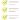
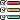
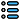

Nuevo tablero
Seleccione los indicadores que va a usar:
Estándar:
Categoría
Sub categoría
 Nombre indicador
Nombre indicador
|
 Estandar |  Categoría |  Sub categoría | Usar |
|---|---|---|---|---|
| {{ item.indicador }} | {{ item.estandar }} | {{ item.categoria }} | {{ item.subCategoria }} |